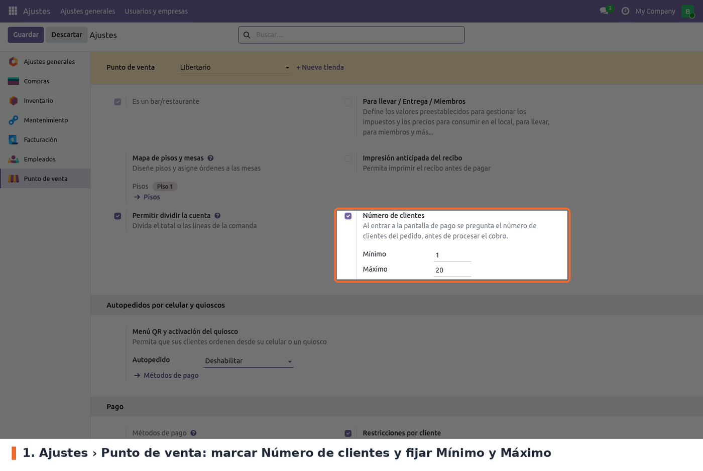
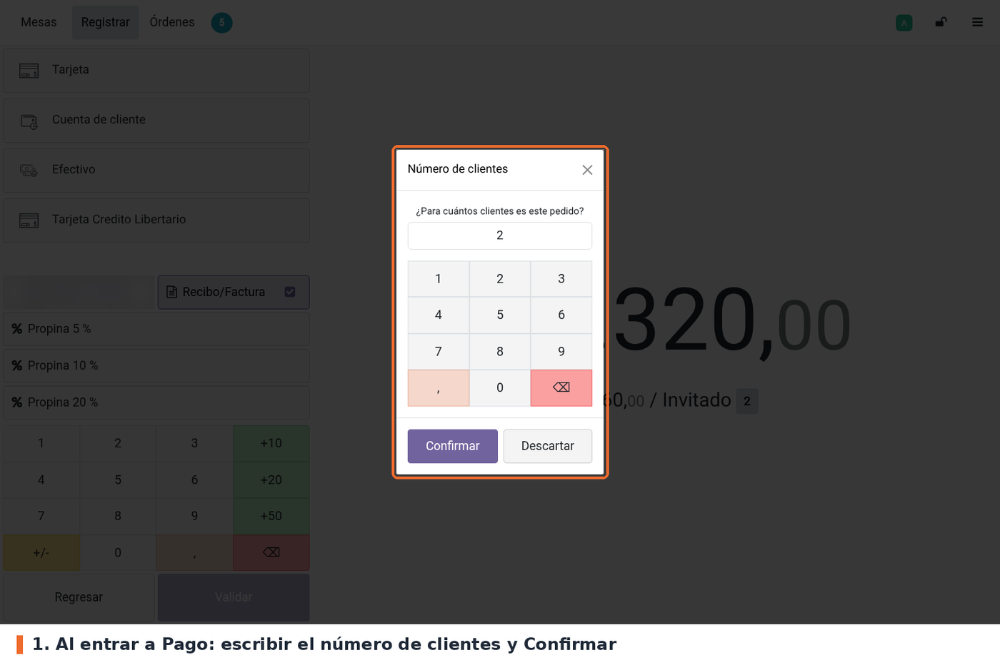
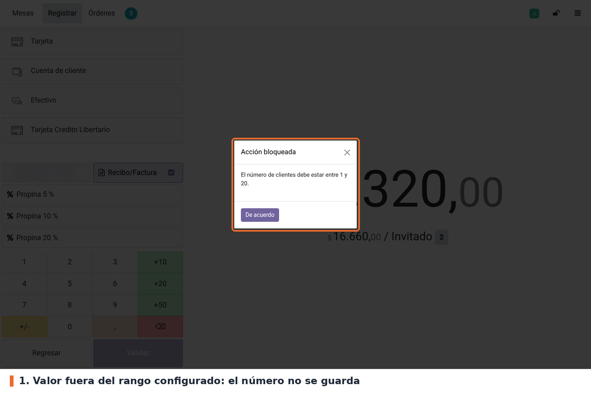
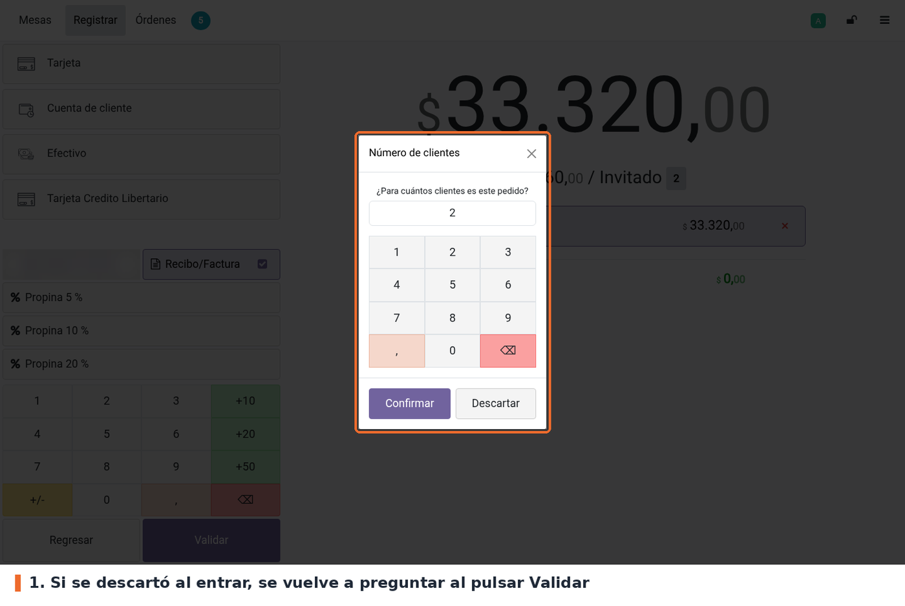
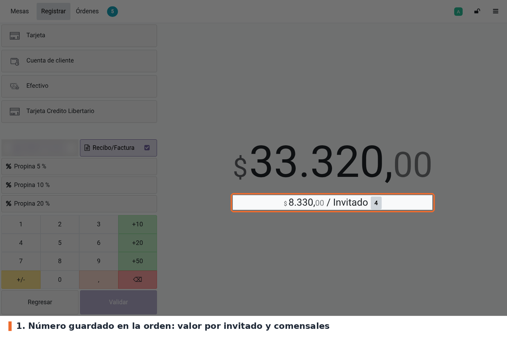

Pide al cajero el número de clientes (comensales) de la orden en cuanto entra a la pantalla de Pago del Punto de Venta, antes de elegir el método de pago. El número tiene que estar dentro de un rango mínimo y máximo configurable por punto de venta; si está fuera del rango, no se guarda.
La pregunta es obligatoria: si el cajero la descarta al entrar, se le vuelve a hacer al pulsar Validar, y la orden no se valida hasta que responda con un número válido.
El valor se guarda en el campo estándar Comensales de la orden (customer_count, de
pos_restaurant), el mismo que usan las mesas. Por eso el valor por invitado de la pantalla de pago,
el encabezado del recibo (Mesa N, Comensales: X) y la ficha de la orden en el backend lo muestran
sin cambios adicionales.
Relación con Odoo 19: pos_restaurant ya maneja el número de comensales, pero no lo exige. Al
abrir una mesa lo llena con los asientos de la mesa, y solo lo pregunta al abrir la orden si el
punto de venta usa presets con la opción de invitados. Este módulo agrega la pregunta obligatoria
y el rango válido.
pos_restaurant (Odoo 19 Community), que a su vez instala point_of_sale. De ahí vienen el campo
Comensales de la orden y los métodos del POS que usa el módulo. No hay otras dependencias ni
librerías de Python adicionales.Instalar Ask Number of Customers desde Aplicaciones. El módulo agrega tres campos a la configuración del punto de venta y un archivo JavaScript al POS. No crea menús, modelos ni permisos. Después de instalar o actualizar, volver a entrar al POS desde el backend para que cargue el archivo nuevo.
enable_obligatory_ask_number_customers en pos.config),
así que los puntos de venta que la tenían marcada en la 17 la siguen teniendo. No hace falta
script de datos.number_customers_min y number_customers_max se crean con sus valores por
defecto, 1 y 20: el mismo rango que la 17 tenía escrito en el JavaScript. El comportamiento no
cambia hasta que alguien modifique el rango.Ir a Punto de venta › Configuración › Ajustes, elegir el punto de venta en la parte superior y buscar el bloque Punto de venta (el de Es un bar/restaurante). La opción Número de clientes está junto a Permitir dividir la cuenta.

Punto de venta › Configuración › Ajustes › Punto de venta: opción Número de clientes con su rango
enable_obligatory_ask_number_customers de pos.config). Opcional;
desmarcada por defecto. Activa la pregunta. Al marcarla aparecen los dos campos del rango.number_customers_min). Por defecto 1. No se acepta un valor menor que 1.number_customers_max). Por defecto 20. No puede ser menor que el mínimo.A tener en cuenta:
En el POS, abrir la mesa, agregar los productos y pulsar Pago. Si la orden tiene productos sin
enviar a cocina, Odoo pregunta primero si se quiere enviar (es un aviso de pos_restaurant, no de
este módulo). Al llegar a la pantalla de pago aparece la ventana Número de clientes. El valor
inicial es el que ya tenía la orden; en una mesa nueva, los asientos de la mesa. Escribir el número
y pulsar Confirmar.

Pregunta del número de clientes al entrar a la pantalla de pago
Si el número está fuera del rango configurado, aparece el aviso Acción bloqueada con el rango permitido. El número no se guarda y se vuelve a preguntar al pulsar Validar.

Aviso de número fuera del rango configurado
Si el cajero pulsa Descartar o cierra la ventana al entrar, puede seguir registrando los pagos. Pero al pulsar Validar se le vuelve a preguntar, y si descarta otra vez, la orden no se valida y queda en la pantalla de pago.

La pregunta vuelve a salir al pulsar Validar
Una vez respondida, la pregunta no se repite en esa orden, aunque el cajero vuelva a productos y entre de nuevo a pago. El número queda en la orden: la pantalla de pago muestra el valor por invitado y en el recibo sale Mesa N, Comensales: X.

Número guardado en la orden: valor por invitado en la pantalla de pago
pos_restaurant) permiten
corregirlo. Esos botones no aplican el rango de este módulo.pos_restaurant (pantalla de productos y pantalla de pago) permiten poner cualquier número mayor
que cero después de responder.pos_restaurant resta un comensal
a la orden original por cada cuenta separada; este módulo no interviene en ese reparto.models/pos_config.py: los tres campos de pos.config y la restricción del rango
(_check_number_customers_range).models/res_config_settings.py: los campos relacionados en Ajustes, con prefijo pos_ porque
res.config.settings es compartido por todos los módulos.views/res_config_settings_views.xml: el ajuste Número de clientes, insertado después de
Permitir dividir la cuenta (iface_splitbill).static/src/app/utils/order_payment_validation.js: dos parches. PaymentScreen.setup() pregunta
en onMounted, al entrar a la pantalla de pago. OrderPaymentValidation.askBeforeValidation()
pregunta al validar si todavía no se respondió; devolver false detiene la validación. La
pregunta usa NumberPopup con makeAwaitable y guarda con order.setCustomerCount().pos.config.customer_count no sirve para saber si se preguntó, porque
pos_restaurant lo inicia en 1 al crear la orden. Por eso el JS usa order._customersAsked, que
no se guarda en el servidor.askBeforeValidation() es el gancho que Odoo 19 deja vacío para
validaciones previas; l10n_es_pos lo usa igual. validateOrder() lo llama tanto desde la
pantalla de pago como desde el pago en un clic (validateOrderFast). Si cambia de nombre, la
pregunta deja de salir sin ningún error.Order.pay(), que en la 19 no existe, y tenía el
rango 1–20 fijo en el JS. Se eliminó security/ir.model.access.csv, que no estaba en data y
apuntaba a un modelo inexistente. La vista de Ajustes cambió de xmlid; al actualizar, Odoo borra
la vista vieja.tests/test_number_customers_config.py cubre la configuración: valores por defecto,
rechazo de rangos inválidos, escritura desde Ajustes y el prefijo pos_. La pregunta del POS no
tiene test automático: se valida a mano en el navegador.pos_restaurant (receipt_header_patch.js).